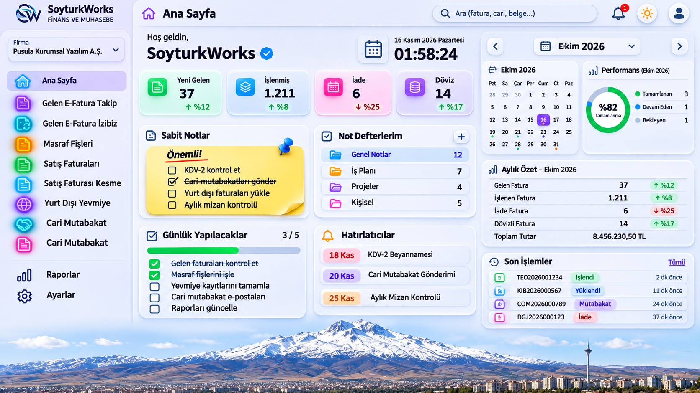
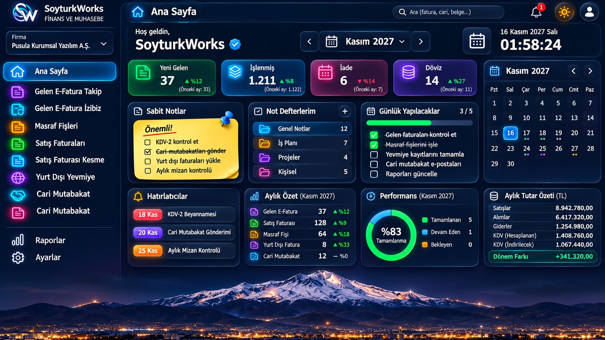

<section class="page" id="page-home" style="display:none" aria-label="Ana Sayfa">
  <header class="sw-home-topbar">
    <h1><span data-hicon="home"></span>Ana Sayfa</h1>
    <form id="homeSearchForm" role="search"><span data-hicon="search"></span><input id="homeSearch" type="search" placeholder="Ara (fatura, not, belge...)" aria-label="Firma kayıtlarında ara"><button type="submit" class="home-sr">Ara</button></form>
    <button type="button" id="homeNotifications" class="home-round" aria-label="Hatırlatıcıları aç"><span data-hicon="bell"></span><b id="homeBadge" hidden></b></button>
    <button type="button" id="homeTheme" class="home-round home-sun" aria-label="Açık temaya geç"><span data-hicon="sun"></span></button>
    <button type="button" id="homeProfile" class="home-round" aria-label="Kullanıcı profili"><span data-hicon="user"></span></button>
  </header>
  <div class="home-welcome">
    <div><p>Hoş geldin,</p><h2>SoyturkWorks <span class="home-verified" title="SoyturkWorks">✓</span></h2></div>
    <div class="home-period"><button data-home-month="-1" aria-label="Önceki ay">‹</button><button id="homePeriodOpen"><span data-hicon="calendar"></span><span id="homePeriodLabel"></span><span>⌄</span></button><button data-home-month="1" aria-label="Sonraki ay">›</button></div>
    <div class="home-clock"><span data-hicon="calendar"></span><div><time id="homeToday"></time><strong id="homeTime"></strong></div></div>
  </div>
  <div class="home-filterline"><span id="homeFilterSummary"></span><button id="homeRangeClear" hidden>Ayın tamamı ×</button><button id="homeSources">Veri kaynakları ⓘ</button></div>
  <div id="homeStatus" role="status" hidden></div>
  <div class="home-board">
    <div id="homeMetrics" class="home-metrics"></div>
    <section class="home-panel home-pinned"><header><h3><span data-hicon="note"></span>Sabit Notlar</h3><button data-home-add="permanent" aria-label="Sabit not ekle">＋</button></header><div class="home-paper"><i class="home-pin" aria-hidden="true"></i><h4>Önemli!</h4><div id="homePinned"></div></div></section>
    <section class="home-panel home-books"><header><h3><span data-hicon="check"></span>Not Defterlerim</h3><button id="homeBookAdd" aria-label="Not defteri oluştur">＋</button></header><div id="homeBooks"></div><button class="home-textlink" id="homeAllNotes">Tüm notlar</button></section>
    <section class="home-panel home-tasks"><header><h3><span data-hicon="check"></span>Günlük Yapılacaklar</h3><span id="homeTaskCount"></span></header><progress id="homeProgress" max="100" value="0" aria-label="Görevlerin tamamlanma oranı"></progress><div id="homeTasks"></div><footer><input type="date" id="homeTaskDay" aria-label="Görev günü"><button data-home-add="today" aria-label="Günlük görev ekle">＋</button></footer></section>
    <section class="home-panel home-calendar"><header><h3><span data-hicon="calendar"></span><button id="homeCalendarLabel"></button></h3><div><button data-home-month="-1" aria-label="Takvim önceki ay">‹</button><button data-home-month="1" aria-label="Takvim sonraki ay">›</button></div></header><div class="home-weekdays"><span>Pzt</span><span>Sal</span><span>Çar</span><span>Per</span><span>Cum</span><span>Cmt</span><span>Paz</span></div><div id="homeCalendar" class="home-days"></div><label class="home-range-mode"><input type="checkbox" id="homeCalendarRange"> Takvimden tarih aralığı seç</label></section>
    <section class="home-panel home-reminders"><header><h3><span data-hicon="bell"></span>Hatırlatıcılar</h3><button data-home-add="reminder" aria-label="Hatırlatıcı ekle">＋</button></header><div id="homeReminders"></div></section>
    <section class="home-panel home-summary"><header><h3><span data-hicon="chart"></span>Dönem Özeti</h3></header><div id="homeSummary"></div></section>
    <section class="home-panel home-performance"><header><h3><span data-hicon="pie"></span>Performans</h3></header><div class="home-performance-content"><div id="homeRing" class="home-ring"><div><strong id="homePercent">—</strong><span>Tamamlanma</span></div></div><div id="homeLegend"></div></div><small>Seçilen günün görevleri</small></section>
    <section class="home-panel home-finance"><header><h3><span data-hicon="coins"></span>Dönem Tutar Özeti <small>(TL)</small></h3></header><div id="homeFinance"></div></section>
    <section class="home-panel home-recent"><header><h3><span data-hicon="clock"></span>Son İşlemler</h3><button id="homeRecentAll" class="home-textlink">Tümü</button></header><div id="homeRecent"></div></section>
  </div>
  <p class="home-source-caption" id="homeSourceCaption"></p>
</section>
<div class="home-landscape" aria-hidden="true"></div>
<dialog id="homeDialog" class="home-dialog"><header><h2 id="homeDialogTitle"></h2><button id="homeDialogClose" aria-label="Pencereyi kapat">×</button></header><div id="homeDialogBody"></div></dialog>
